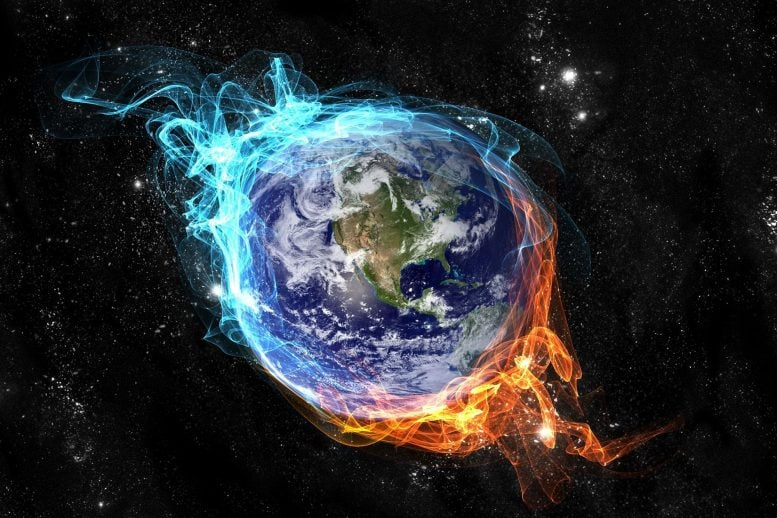
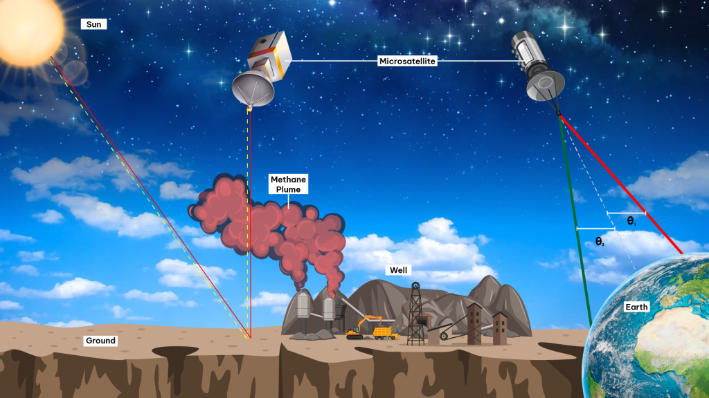
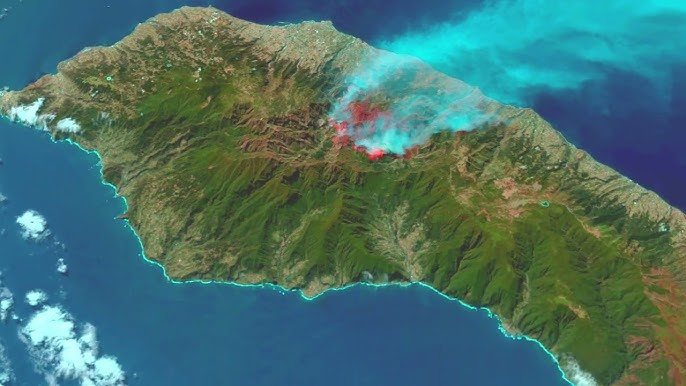
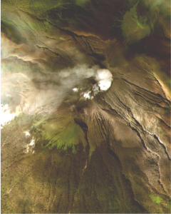
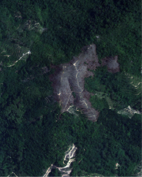
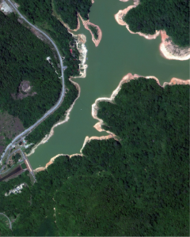
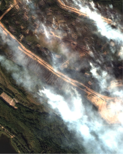
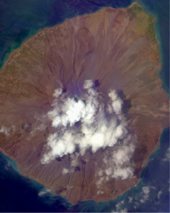

UZMASAT-1 APPLICATIONS
Environmental Monitoring
Consult Me Your Solutions Get Your Free Trial NowGeospatial AI is revolutionising environmental monitoring with our cutting-edge solutions powered by UzmaSAT-1. By leveraging high-resolution imagery and advanced analytics, we provide actionable insights to help you address critical environmental challenges.

Satellite-Based Environmental Monitoring and Emissions Tracking
Uzma Digital Earth enhances environmental monitoring by leveraging satellite-based remote sensing to detect methane plumes, CO₂, and NO₂ emissions, which are crucial for tracking air quality and greenhouse gases. Our platform provides real-time data on gas emissions, helping to pinpoint sources and measure their environmental impact accurately.
Climate Monitoring and Data-Driven Decision Making
Additionally, satellite data enables continuous monitoring of weather patterns and climate indicators, allowing users to observe changes in temperature, precipitation, and other climate variables.
This comprehensive approach empowers policymakers and environmental organizations to make informed, proactive decisions in addressing pollution, managing emissions, and understanding climate change dynamics.

Advanced Satellite Technology for Environmental Monitoring
Geospatial AI is leveraging satellite technology and cutting-edge analytics to provide actionable insights for addressing critical environmental challenges.
The UzmaSAT-1, equipped with high-resolution optical and radar sensors, captures detailed imagery of the Earth’s intricate surface, allowing us to monitor and analyze environmental changes in real time.
Enviro .GAI
High-Resolution Imagery and Key Applications
UzmaSAT-1 offers unparalleled spatial resolution, enabling us to identify and track even the smallest environmental changes. Its radar capabilities provide valuable data regardless of cloud cover, ensuring continuous monitoring. Our high-resolution imagery is used for a wide range of applications, such as:
Deforestation Monitoring
Tracking the loss of forest cover
Coastal Erosion Assessment
Land Use Change Analysis (LUCA)
Understanding how land is being used and identifying patterns



